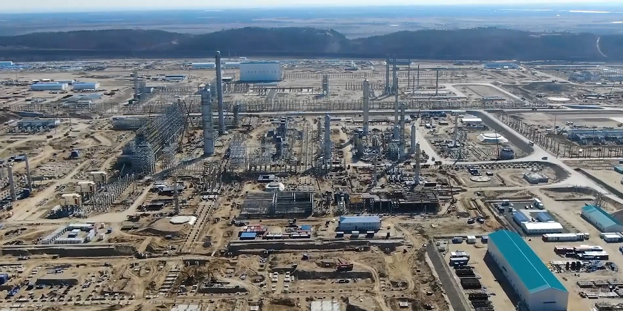
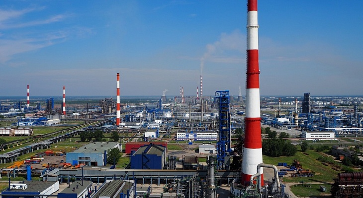
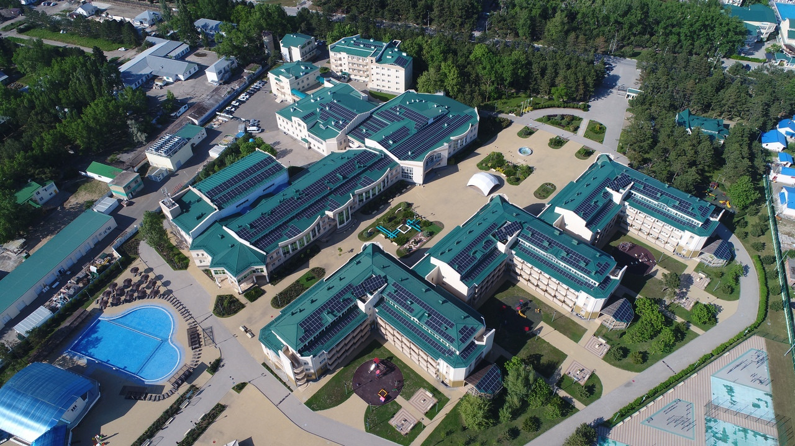

Gerçekleştirilen Proje Deneyimleri
Aşağıda yer alan projeler, Arzeno İnşaat kurucusunun yurtiçi ve yurtdışında edindiği doğrudan proje deneyimlerini yansıtmaktadır. Bu projeler şirketin değil, kurucunun geçmişte bireysel olarak görev aldığı çalışmaları kapsamaktadır.
- Amur Gaz Kimya Kompleksi (AGCC)
1 milyar USD bütçeli Rusya’nın en büyük petrokimya projelerinden biridir. Kurucu, teknik ofis şefi olarak görev almış; bütçe hazırlığı, iş gücü ve maliyet analizleri, hakediş ve saha koordinasyonunu yürütmüştür. Ayrıca proses borulama, inşaat, mekanik, elektrik ve altyapı işlerine yönelik saha uygulamaları ve teknik ofis çalışmaları incelenmiştir.
 - Omsk Ham Petrol Damıtma ve Vakumlama Ünitesi
120 milyon USD bütçeli projede; çelik yapı, betonarme, borulama ve ekipman montaj işleri kapsamında sahada aktif görev alınmıştır. Teknik ofis koordinasyonu ve saha mühendisliği görevleri bir arada yürütülmüş, çok disiplinli imalatlar takip edilmiştir.
 - Severstal Sıcak Fırın Projesi
100 milyon USD bütçeli endüstriyel projede teknik ofis operasyonları, alt yüklenici sözleşmeleri, ilerleme raporlamaları ve proje kontrol süreçlerinde görev alınmıştır. - Siburyug Otel Projesi
Cephe, çelik, iç mimari ve altyapı işlerini kapsayan 120 milyon USD’lik projede, teklif süreçlerinden sahadaki uygulamalara kadar tüm teknik ofis yönetimi üstlenilmiştir.
 - DCC Kompleksi (Gazprom Neft)
45 milyon USD bütçeli bu projede kazı, dolgu, borulama ve betonarme imalatlar sahada uygulanmıştır. Test ve devreye alma süreçlerinde doğrudan sorumluluk alınmıştır. - Toplu Konut Projeleri (Türkiye)
Türkiye'de çeşitli bölgelerde gerçekleştirilen konut projelerinde; metraj, teklif hazırlığı, şantiye planlaması ve teknik ofis çalışmaları yürütülmüştür.
Bu deneyimler, Arzeno İnşaat’ın sahip olduğu uluslararası vizyon, saha disiplini ve mühendislik zekasının temel taşlarını oluşturmaktadır.